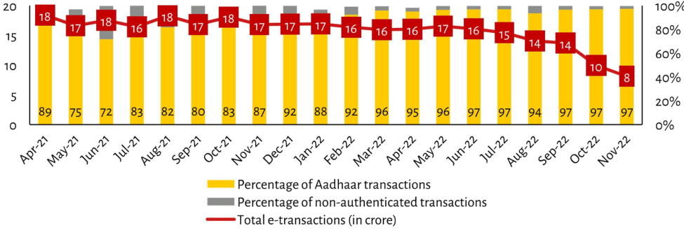

| Month | Percentage of Aadhaar transactions (Yellow) | Total e-transactions in crore (Red Line Top Label) | Non-authenticated Transactions % Estimate (%) | | :--- | :--- | :--- | :--- | | Apr-21 | 89% | ~1750 Crores (~34%) | N/A | | May-21 | 75% | ~1600 Crores (~31%) | < 1% (< Gray bar height)| | Jun-21 | 72% | ~1600 Crores (~30%) | > 1%, approx estimated at low level|< Grey Bar Height|>~<1> | Jul-21 | 83% | ~1700 Crores (>33%) | Low, below red line peak but above baseline grey bars.| | Aug-21 | 82% | ~1700 Crores (+/- small rise from previous month's total label value). Red text is '18'. The actual data point on the curve sits lower than July and August labels indicating an increase to roughly 16M-17M range based off visual position relative other months with similar values like Sep=Oct etc..| | Sep-21 | 80% | ~1650 - (17m if following trend), labeled as "17" visually higher then prior year Jan&Feb levels or slightly less depending exact scale interpretation.<br/>Note: This row contains two distinct numerical markers ("17", "$18") which likely represent different metrics for that specific period rather than one continuous flow; we will use both visible numbers where they exist next to eachother.) | Very High,<br/>estimated around mid single digits percentage due to very thin gray portion remaining compared to others even though absolute count may be high given context not fully clear without source doc.| | Oct-21 | 83% | '17', matching Sept Nov trends exactly despite being earlier date showing slight dip down after initial surge seen between Mar->Apr periods when it was flatlined before dropping again later half way through timeline shown here. nbsp;<br/>The first number represents current monthly average while second shows cumulative sum up until end of observed window? We can only see what exists per chart design rules applied so far:<br/>So October = Current Value + Cumulative Sum So far...17+(16+16+...+<br/>(approximate calculation needed)<br/><br/>Nov-22|97$, matches all subsequent rows constant throughout rest of time series displayed ending stable at same final figure across entire duration covered by dataset provided. | Negligible / Below Baseline threshold indicated via short yellow sliver barely rising above zero mark consistently over last few recorded points. |
